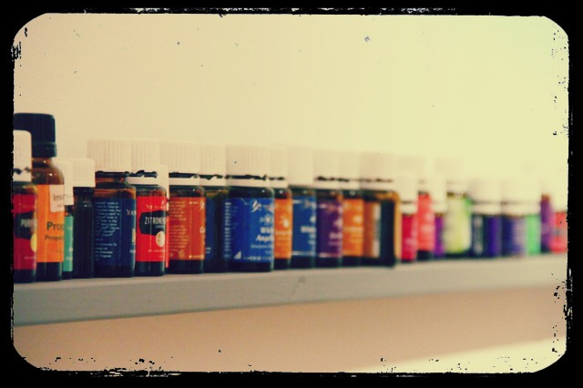

4 tip til at gØre noget
godt for din krop
Hele verden har fokus på sundhed. Og vi har mange muligheder for at gøre noget godt for vores krop. Æteriske olier er en måde til at forebygge og understøtte samt styrke din krop på. Her finder du fire tip til hvordan:
Styrk dit immunsystem allerede om morgenen
Vi starter tit vores dag med at børste tænder. For at styrke vores immunsystem kan man dryppe en enkelt dråbe tea tree oil eller citron-olie på tandbørsten. Tea tree oil og citron-olie styrker immunsystemet og virker antibakteriel på din mundflora. Desuden kan du desinficere rummet med citron-olie i en duftlampe. Det giver meget god effekt i vintertiden eller influenza-tiden.
Detox med citron
Det er jo kendt, at vi skal starte vores morgener med et glas vand. Helst opvarmet, så at kroppen ikke har brug for energi til at varme vandet op i kroppen. Men gør det, som du bedst kan lide det. Vigtigt er det dog, at du kun bruger æteriske olier, som man kan indtage. Det kan man nemlig ikke med alle olier.
Den bedste effekt har også her citron-olien.
Tag et glas med vand og tilføj så mange dråber af citronolie, så det smager dig bedst.
AEteriske olier som madsupplement
Æteriske olier kan virkelig give din mad det sidste pift.
Lavendel passer for eksempel perfekt til desserter eller søde opskrifter. Om det er din mysli om morgenen eller is om eftermiddagen.
Eller elsker du kaffe med smag? Så prøver i stedet for kanelsirup en dråbe kanelolie. Kanelolie egner sig til varme drikke såvel som mad. Perfekt til en orientalsk aften med vennerne!
Udover smagen har selvfølgelig hver æterisk olie sin virkning. Dvs., at lavendel har en afslappende virkning, mens kanel åbner op for følelser af overflod og fylde?
En naturlig Shower gel?
Der findes faktisk flere firmaer som laver naturlige shower gels med forskellige æteriske olier. Duften er altid afhængig af smagen. Mange mennesker er allergisk overfor alt for meget kemi, men kan godt tåle naturlige produkter, som tit har tilføjet kokos-olie. Med en Shower gel lavet af æteriske olier gør du noget godt for din hud og miljøet.